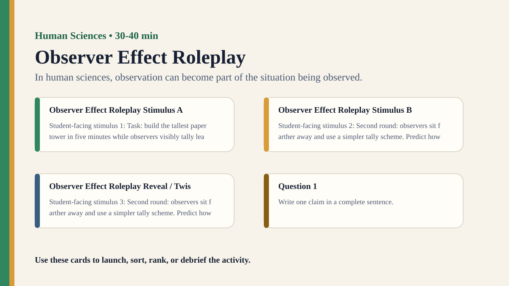

Premium draft resource
Observer Effect Roleplay Classroom Run Kit
Students roleplay a classroom observation study and examine how being observed changes behavior and evidence.
Back to Observer Effect Roleplay
One-Minute Teacher Brief
Students roleplay a classroom observation study and examine how being observed changes behavior and evidence.
Big idea: In human sciences, observation can become part of the situation being observed.
Student Prompt
Inspect Observer Effect Roleplay Stimulus A. Record one first claim, the evidence you used, your confidence, and what would make you revise.
Concrete Stimulus Packet
Stimulus
Observer Effect Roleplay Stimulus A
Student-facing stimulus 1: Task: build the tallest paper tower in five minutes while observers visibly tally leadership, interruptions, and suggestions. Predict how people will respond, then identify the wording, context, incentive, or role that could change the result.
Students inspect this exact card first and commit to a claim before hearing anyone else.Stimulus
Observer Effect Roleplay Stimulus B
Student-facing stimulus 2: Second round: observers sit farther away and use a simpler tally scheme. Predict how people will respond, then identify the wording, context, incentive, or role that could change the result.
Use this for comparison, a second round, or a partner challenge.Stimulus
Observer Effect Roleplay Reveal / Twist
Student-facing stimulus 3: Second round: observers sit farther away and use a simpler tally scheme. Predict how people will respond, then identify the wording, context, incentive, or role that could change the result.
Teacher reveal: connect the changed response to the big idea — In human sciences, observation can become part of the situation being observed.Actual Lesson Questions
| # | Question for students | Teacher key / cue |
|---|---|---|
| 1 | After inspecting Observer Effect Roleplay Stimulus A, what is your first knowledge claim? | Teacher cue: look for a clear claim, not just a description. |
| 2 | Which exact detail from Observer Effect Roleplay Stimulus A did you use as evidence? | Teacher cue: students should name visible words, data, source features, method features, or contextual clues. |
| 3 | What did you infer beyond the evidence? | Teacher cue: this is where assumptions, framing, models, or perspective usually appear. |
| 4 | How confident are you: 50%, 60%, 70%, 80%, 90%, or 100%? | Teacher cue: confidence is data for the debrief, not a grade. |
| 5 | What missing information would most improve the knowledge claim? | Teacher cue: push for method, source, context, comparison, or definitions. |
| 6 | Can observation alter what is known? | Teacher cue: students should move from the classroom example to a general TOK issue. |
Student Task
Use the stimulus cards to complete the observation/inference/evidence/confidence grid, then answer one TOK knowledge question connected to Human Sciences.
Teacher Key / Reveal
The key move is not the “right answer”; it is the moment students see how in human sciences, observation can become part of the situation being observed.
- Strong response: separates observation from inference.
- Strong response: names a method, source, model, language choice, context, or perspective.
- Strong response: revises confidence when new evidence or a new criterion appears.
- Weak response: gives only opinion or says “it depends” without criteria.
Classroom materials
Printable Pack and Cards
Open the classroom resource pack for stimulus cards, CSV card deck, and the activity visual prompt.
Visual Prompt

Setup Checklist
- Make the observation visible and ethical; students should know the activity studies observation effects.
- Use a harmless group task where behavior can naturally vary.
Ready-to-Use Examples
- Task: build the tallest paper tower in five minutes while observers visibly tally leadership, interruptions, and suggestions.
- Second round: observers sit farther away and use a simpler tally scheme.
Run Resources
- Behavior coding sheet with three visible behaviors.
- Participant reflection card: what changed because you knew you were observed?
Teacher Language
- In human sciences, the method can enter the behavior it measures.
- Which version gave cleaner data, and which version was more natural?
Sample Student Output
- I spoke more carefully because I saw someone tallying interruptions.
- The visible observation made the data easier to collect but less natural.
Procedure
- Assign some students to perform a simple group task and others to observe.
- Run one round with obvious observation and one with a less intrusive method.
- Observers tally behavior using a fixed coding scheme.
- Participants reflect on whether observation changed how they acted.
- Debrief validity, ethics, and method choice.
Debrief Questions
- Knowledge question: Can human behavior be observed without changing it?
- How should researchers balance natural behavior, consent, and control?
- What counts as good evidence when people react to being studied?
Adaptations
- Support: use two coded behaviors.
- Challenge: compare observer agreement between two coders.
Extension Tasks
- Students redesign the observation to improve validity while preserving consent.
- Connect to classroom observations, workplace studies, and ethnography.